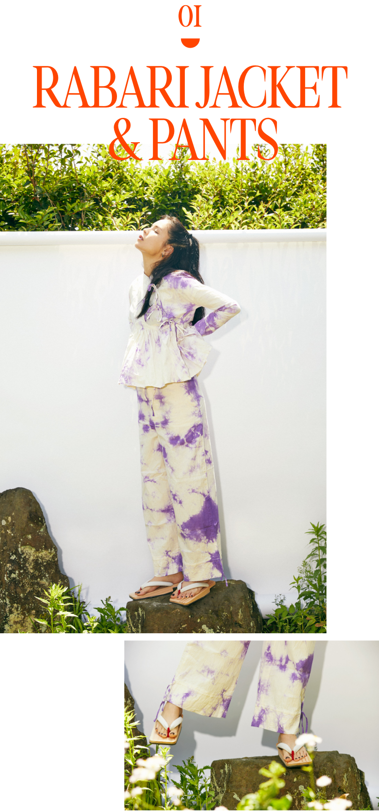
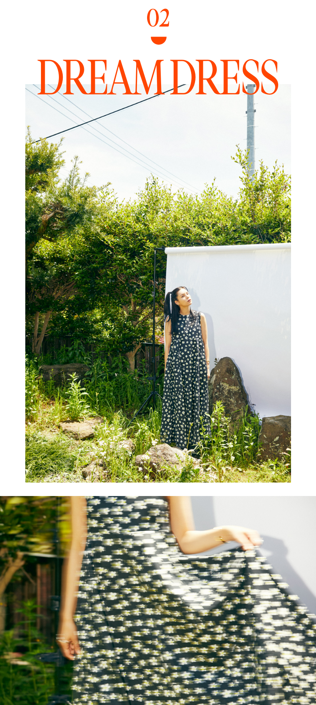
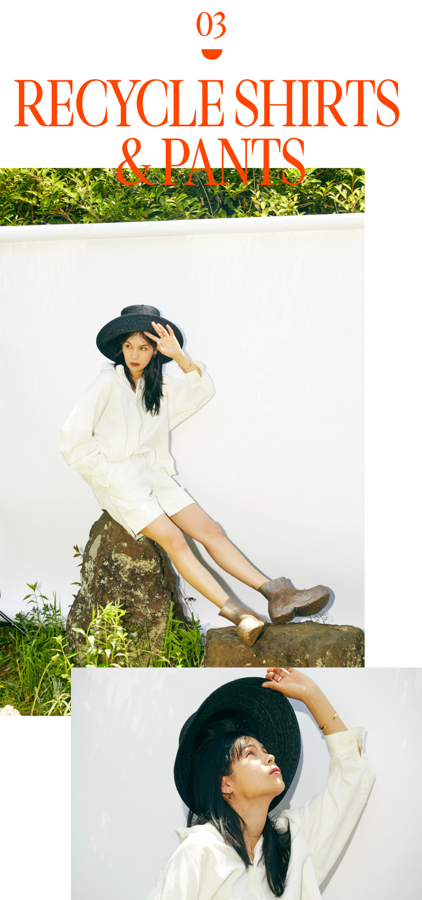
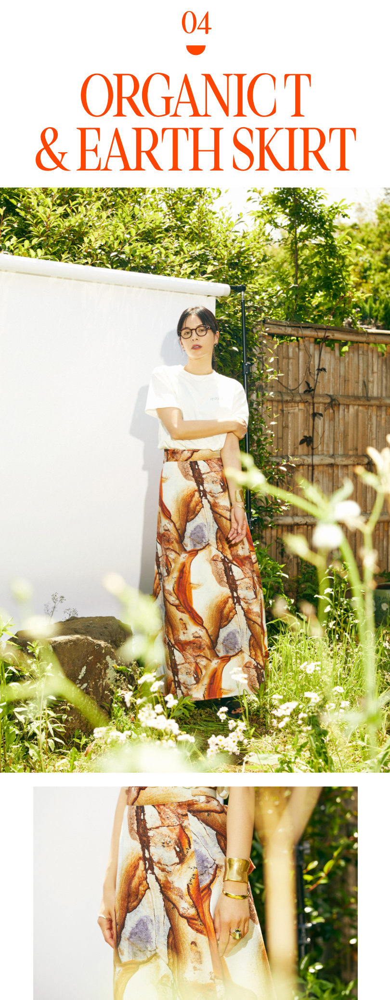
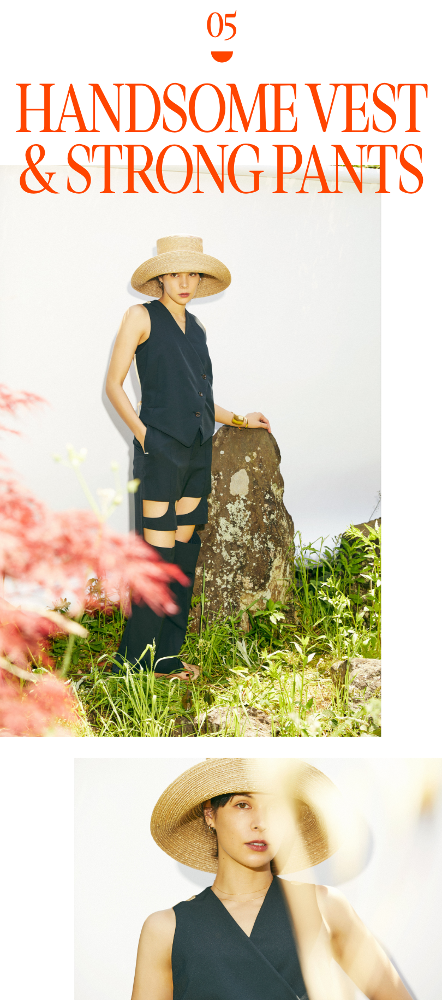
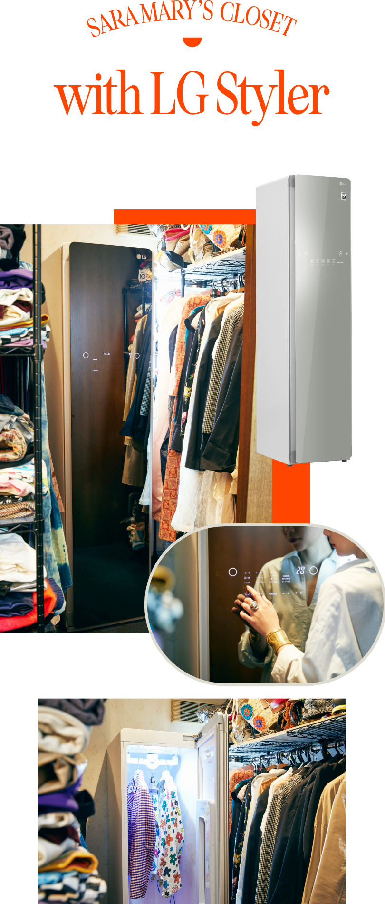

2022.05.31
カルチャーや音楽への造詣が深く、独創的なクリエイティブで異彩を放つ紗羅マリーさん。モデル、歌手、女優として活躍しながら、自身のブランド“irojikake”のデザインも手掛けています。一生着たいと思える素材や、繊細に設計されたパターンを大切する彼女にとって、LG Stylerが欠かせないそう。その魅力を伺いました。

インド西部をルーツとするラバリ民族の男性服をモチーフにしたセットアップ。インドの音楽や衣装や歴史にハマって、数シーズン作り続けています。現地でラバリジャケットを作っている方々から、SNSで熱いメッセージをいただいたことも。このパープルの染めは新色です。
丈夫なコットン素材なので洗濯機もOKですが、ガシガシ洗うと目が詰まって硬くなってしまいます。LG Stylerを使って、ふわふわの仕上がりで着る方が気持ちいい。
丈夫なコットン素材なので洗濯機もOKですが、ガシガシ洗うと目が詰まって硬くなってしまいます。LG Stylerを使って、ふわふわの仕上がりで着る方が気持ちいい。

自分の描いた花柄をテキスタイルにしたもの。毎シーズン着たい柄をドローイングして生地にしています。こだわったのは、美しいラインを表現するためのハリのある生地と、その布地の量。なかなか無い、かなり長い生地でキレイなパターンを作りました。
基本的に、クリーニングに出したくない一枚。繊細にシルエットを作り上げたので、それを一ミリも崩したくなくて…日々のケアはLG Stylerがベストです。
基本的に、クリーニングに出したくない一枚。繊細にシルエットを作り上げたので、それを一ミリも崩したくなくて…日々のケアはLG Stylerがベストです。

最近は出来る範囲でリサイクル素材を使いたくて生地屋さんを探し回っていますが、肌触りの硬いものが多いんです。だから、このセットアップに使ったリサイクルコットンは様々な工程を加えて、最高の着心地に仕上げました。ブーツで遊び心を忘れず、ブラックのハットでエッジを効かせたスタイルに。
柔らかな肌当たりにこだわったので、LG Stylerで仕上げてふんわり着たい。ちょっとした外出だけならLG Stylerだけで十分ですし、たっぷり動いた日は洗濯の後にLG Stylerに入れてもいいんです。
柔らかな肌当たりにこだわったので、LG Stylerで仕上げてふんわり着たい。ちょっとした外出だけならLG Stylerだけで十分ですし、たっぷり動いた日は洗濯の後にLG Stylerに入れてもいいんです。

シンプルなオーガニックコットンTには、存在感のある巻きスカートを。この柄は石の写真をそのままプリントしたもので、柄違いで海の写真のプリントもあります。これも時間をかけたのはパターン設計。欲深いタイプなのか(笑)着たいデザインの発想は尽きないのですが、いつも美しいカッティングやタックを追求するのがデザインの頑張りどころ。
デニム生地の巻きスカートなので、洗濯機に入れると重量があって一苦労。とはいえ着るたびにクリーニングに出すのも大変。今はLG Stylerにかけておくだけなので楽チンです。
デニム生地の巻きスカートなので、洗濯機に入れると重量があって一苦労。とはいえ着るたびにクリーニングに出すのも大変。今はLG Stylerにかけておくだけなので楽チンです。

個人的には現代の寅さんのイメージして作ったスタイル(笑)。メンズライクなベストを潔く素肌に着ても面白いし、中にシャツを入れて遊んでもいい。毎年、夏の足元は下駄なので、今季はirojikakeでも作りました。
つるりとした光沢ある生地を傷ませたくないので、これもやっぱりLG Stylerに。上下ともに凝ったディティールなので洗濯機を回すより安心です。
つるりとした光沢ある生地を傷ませたくないので、これもやっぱりLG Stylerに。上下ともに凝ったディティールなので洗濯機を回すより安心です。

万能なLG Stylerのおかげで、最高に楽チンです。私の服はカシミヤにシルクと繊細な素材が多く、洗うならクリーニングに出したいものばかり。コットンやポリエステルにしても、生地の特性でお洗濯の仕方を変えるのが一手間ですよね。ちょっと食事に行っただけで服に臭いがついていると、げんなりしてしまうことも。そこでLG Stylerを導入してからは「とにかく何でも入れちゃう」スタイルで生活が一変。今は帰宅したら、LG Stylerに服をかけ、スイッチを入れて寝る。それがルーティーンです。

公式HP

1986年12月12日生まれ、愛知県出身。女優、モデル、歌手、そして自身のファッションブランドirojikakeのデザイナーも務めるなど、幅広い分野で活躍中。出演作には、ミュージカル舞台『ＲＥＮＴ』（17）、映画『ニワトリ★スター』(18)、『花と雨』（20）。2022年4月15日にはヒロインを務めた「ニワトリ☆フェニックス」が公開され主題歌も担当した。
Composition & Text: Takako Nagai [CATAL DESIGN]